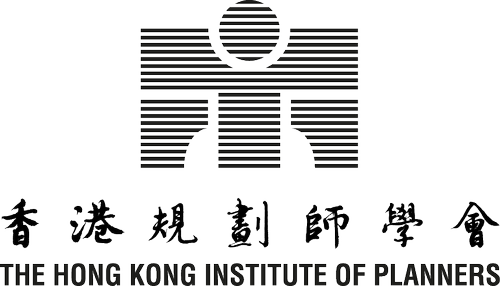
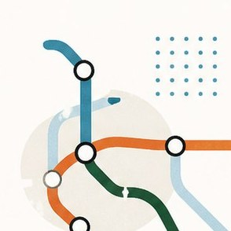
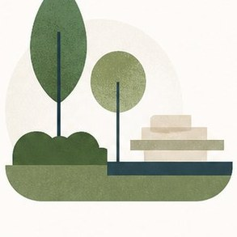
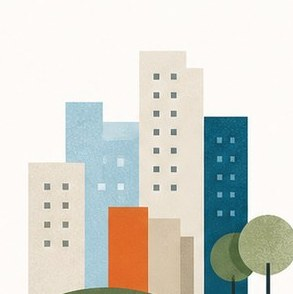
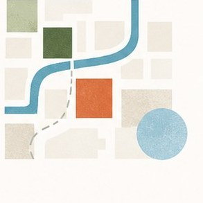
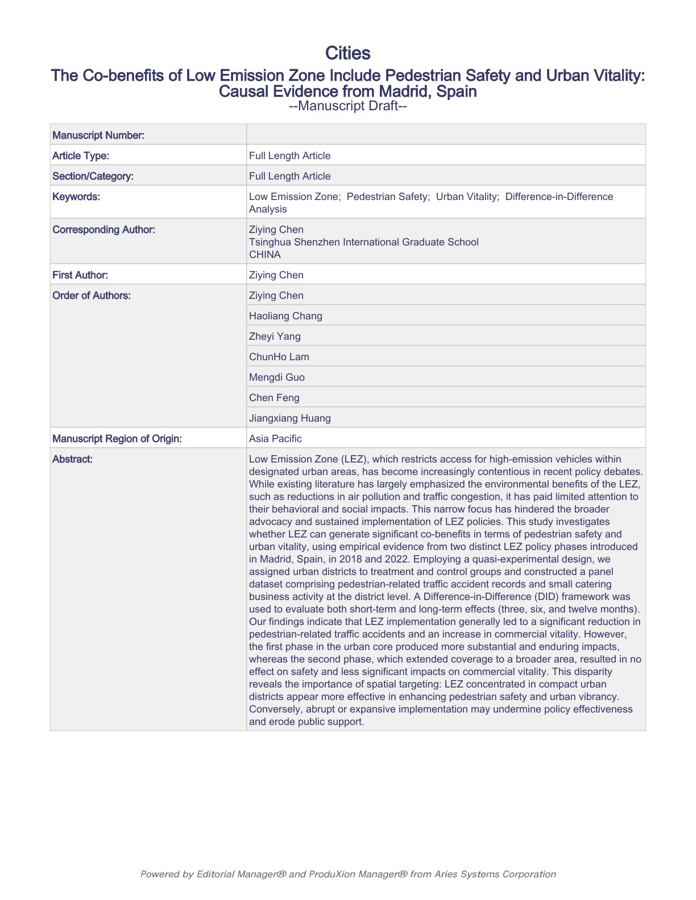

深耕「北都」研究
聚焦北部都會區的重構方案、跨境協同、產業節點與社區承載力，從政策框架、土地條件與空間網絡中提煉可落地的規劃判斷。
Urban Planning · Spatial Analysis · Policy Research
Urban Planning · Spatial Analysis · Policy Research
我是林圳豪 Hudson Lam，香港大學 MUP 學生及 MUD Distinction 畢業生。我的工作關注香港城市研究、社區更新、公共住房與跨境創科走廊規劃，並嘗試把政策理解、空間分析與有溫度的公共價值放進每一次規劃決策。
當前研究Current Focus
聚焦北部都會區的重構方案、跨境協同、產業節點與社區承載力，從政策框架、土地條件與空間網絡中提煉可落地的規劃判斷。
從 515 公頃新城規劃到 400 平方米公共空間更新，以尺度切換處理不同層級的城市問題。
以城市空間網絡、政策影響與 Difference-in-Difference 方法，支撐更可驗證的規劃判斷。
About

林圳豪 LAM Chun Ho (Hudson)
MUP Student (2025-2027) + MUD Graduate (2024-2025) at HKU
Hong Kong based
Seeking Urban Planner / Urban Designer / Urban Manager roles
我的研究方向聚焦城市空間網絡與政策影響效果，目前關注香港社區尺度消費模式轉變及其對城市生活的影響。設計方面，我具備多尺度空間設計能力，從 515 公頃的新城規劃到 400 平方米的公共空間更新，均有競賽獲獎與實作導向的作品經驗。
我目前是 HKIP、HKIUD、RTPI 學生會員，亦參與本地智庫、HKU 兼職研究助理工作，並擔任 MUP 班級代表。未來希望在城市規劃與城市設計領域，連結研究證據、制度理解與面向社群的空間實踐。
Part-time Urban Planning assistant
Assist Northern Metropolis reconstruction planning and technical drawing production.
Student Research Assistant
Conducted research on Hong Kong public housing network and co-benefit of transport policies; two Urban Study Q1 papers under review (Frontiers in Built Environment / Cities).
Architectural Design Intern
Led “Wellbeing in Chak On” community renewal plan design, collaborating with HKHA for implementation.
Urban Planning assistant
Conducted Northern Metropolis horizontal planning research, site investigations, and concept design development.
Architectural Engineering assistant
Organized 4000+ design drawings for Prince of Wales Hospital Phase II and compiled Kai Tak hospital construction reports.
Urban Planning Intern
Created industrial planning maps, analyzed building environments, and produced 3D models/CAD drawings for land use planning.
Education & Membership
The University of Hong Kong · MUP Student
2025 - 2027 · GPA 3.45/4.3The University of Hong Kong · Pass with Distinction
2024 - 2025 · GPA 3.73/4.3Chongqing University · School of Architecture and Urban Planning
2019 - 2024 · GPA 3.38/4.0
HKIP Student Member · RTPI Student Member · HKIUD Graduate Member
Hong Kong / United Kingdom professional planning and urban design networksFocus Areas

以社區尺度、空間網絡、消費模式與政策影響為切入點，理解城市生活如何被制度、交通與公共設施塑造。

關注居民日常、公共空間與社會連結，將設計從形式美學推進到可討論、可落地、可維護的社區方案。

結合香港公共住房網絡、生活服務與空間公平議題，探索居住環境與社會福祉之間的關係。

整合土地使用、交通、公共界面、開放空間與城市形態，在多尺度條件下建立清晰的空間策略。
Large-scale Urban Design

Dubai Creek Harbor
以水文韌性重構沙漠城市的濱水生活，整合 blue-green network、極端氣候調適、文化身份與智慧治理。

Hung Hom Waterfront
將紅磡濱水塑造成 connected, vibrant and engaging 的公共目的地，連結文化記憶、步行體驗與親水活動。
Development & Competition Strategy

ULI 2025
Kai Tak 健康未來城市提案，結合居住、創新產業、體育旅遊、健康服務與濱水公共空間。

ULI 2026
將上海濱水工業邊緣更新為 digital art、IP co-creation、公共住房與混合用途共存的城市片區。
Community-scale Public Space

Champion
回應老化立面、低使用率與模糊導向，透過模組家具、活動平台與社區事件重新激活公共空間。

Merit Award
以跨代安全教育、彈性空間、透明平台與親子互動，更新 Sau Mau Ping Road Safety Town。
Research & Planning Reports

Cities · IF 6.6
以 Difference-in-Difference 研究低排放區對行人安全與城市活力的共同效益，連結政策評估與城市生活。

Frontiers in Built Environment · IF 2.7
研究香港公共住房網絡與交通政策共同效益，連結建成環境、公共服務與城市生活品質。

Studio Planning Report
圍繞 Northern Metropolis、I&T 發展、區域協同、人才社群與碳中和，建立策略規劃基礎。
Updates & Recognition
Academic
Award
Research
Affiliation
Community Commitment
在重慶大學期間，我創立並擔任 Meow Society - Stray Cat Care Association 會長，組織校園流浪動物照護、救助、領養與倡議工作。這段經歷不只是課外活動，也是我理解社群組織、公共溝通與日常照護倫理的重要起點。
城市規劃不只關於宏大的空間藍圖，也關於誰被看見、誰被照顧，以及一個社群如何建立持續行動的能力。這份經驗塑造了我對「有溫度的專業」的理解。


Contact
Open to Urban Planner / Urban Designer / Urban Manager opportunities in Hong Kong.